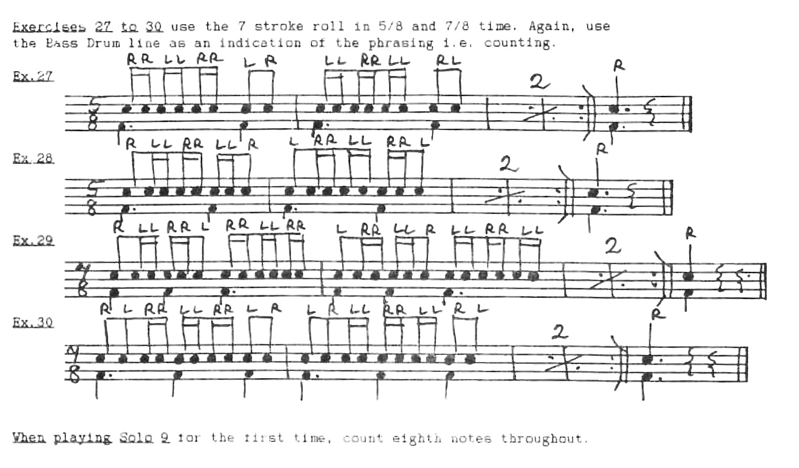
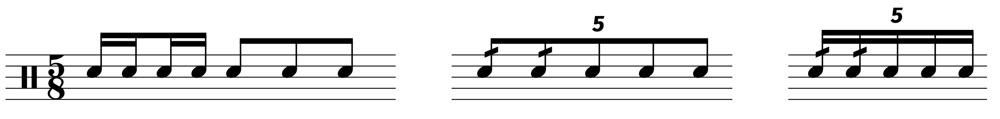

Review: Roll Review by Michael Skinner
Posted on April 10, 2022
(Review: Roll Review… try saying that five times fast!)
It seems like a lot of musicians have gotten hip to the resources afforded by these weird PDF libraries that have popped up across the internet (sites like Scribd, KUPDF, PDFCookie, and PDFCoffee). I don’t know why these sites exist, and I really don’t know why anyone would take the time to scan sheet music and upload it anonymously where it may or may not be seen. Nonetheless, there’s a lot of really interesting stuff out there.
For most mainstream books, I always encourage that you eventually buy a physical copy if you bootleg a PDF. What’s more interesting to me are the books that are out of print. I’ll say it again: why anyone would take the time to scan one of these is beyond me, but I’m grateful since you can go down a rabbit hole on these sites and discover a gem like Roll Review.
Roll Review was written by Micheal Skinner, a percussionist based out of the UK who can boast performance credits such as the London Philharmonic Orchestra. If it weren’t for this interview, I wouldn’t know anything about the guy. He doesn’t seem to have a website or any contact info, so unfortunately I can’t reach out to him and ask about the status of this book.
As far as I can tell, physicals copies of this Roll Review are not available anywhere. It’s a shame because this book is great.
A while back I said I would review books in the order I went through them, but I’m gonna shake that up today because this is a pretty unique book that I just have to talk about.
Unsurprisingly, Roll Review is all about the double stroke roll. However, instead of short roll exercises, Roll Review features patterns of singles and doubles, many of which are in odd meters:
You can probably see the appeal; aside from the reading and counting challenge, consider how you can take one of the drills from the book (as written) and convert it to the appropriate tuplet:
Aside from triplets, tuplet–based rolls are an avenue that not many drum kit players explore. But this can really give a fun edge to your playing, and Roll Review is full of stuff like it.
Aside from the clear musical applications, these patterns are great reading challenges as well, and each chunk of exercises is followed up by a short solo, typically 8–16 bars in length. Even “straightforward” meters like 3/2 can be a fun brain–twister.
The book is challenging, but not heinously so. Even after going through it, breaking out Roll Review to warm up can be very valuable, more so than many other books.
I’m not sure if this is OK or not, but I’m going to link a PDF to this book. Please reach out to me if this is not acceptable, but there doesn’t seem to be an easy way to get ahold of this book legitimately.